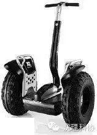
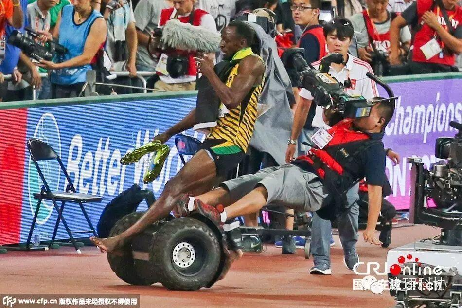
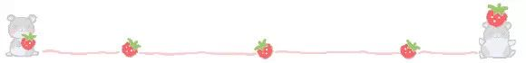
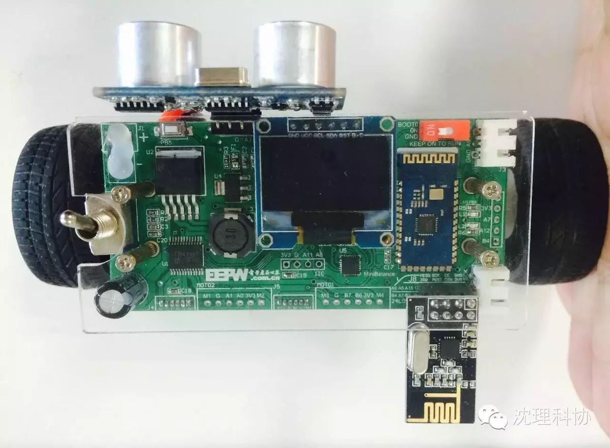
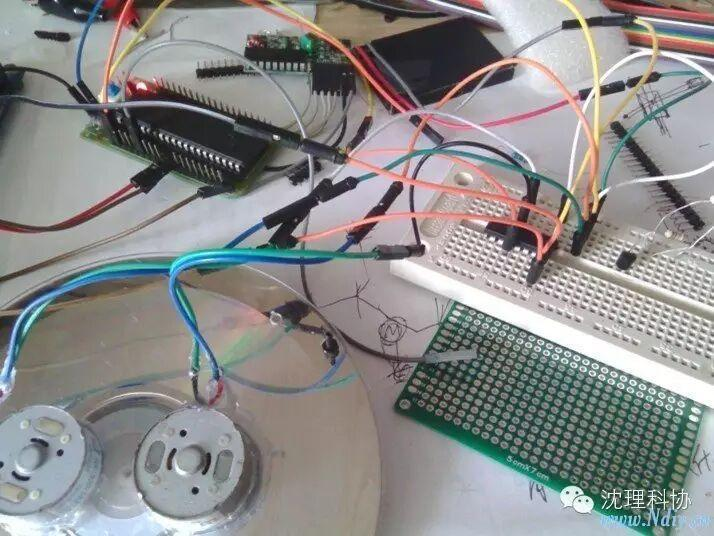
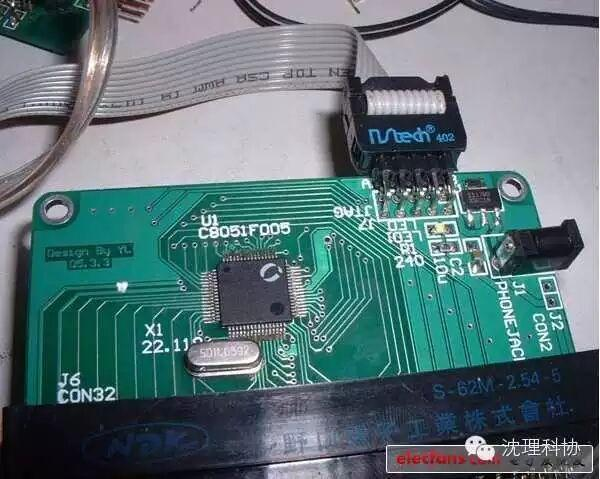

社团良品之平衡车
平衡车666
135编辑器
今天小编为大家带来的是来自我们社团伍鑫学长的平衡车。随着科技进步，代步工具越来越多，自行车，独轮，平衡车。平衡车以其小巧轻便获得的广大朋友们的喜爱。

大家还记得发生在前不久的北京世锦赛吗？



看看平衡车多厉害，把“飞人”都撞飞了，哈哈，平衡车的用途可见一斑，看看我们学长做的袖珍平衡车

接下来我们看看它的构造


小伙伴们如果感觉还没有过瘾的话，请点击左下方的阅读全文，精彩的视频等着你。
关注沈理科协（微信：sylgkx）
每一次转发和分享都是对我们的肯定。
关注一下又不会怀孕！